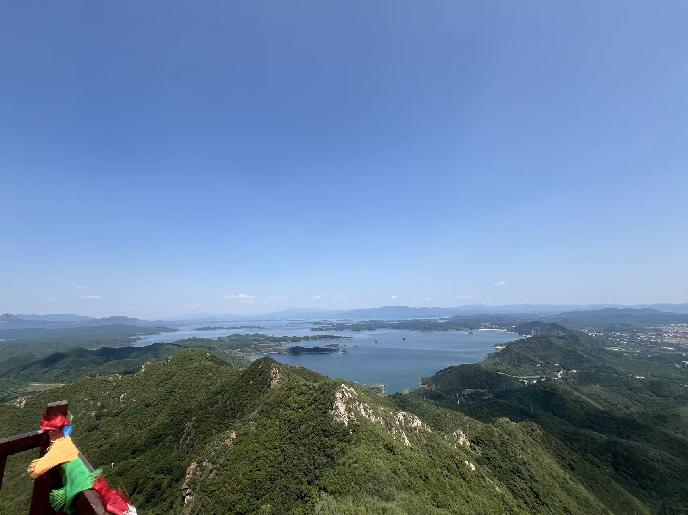
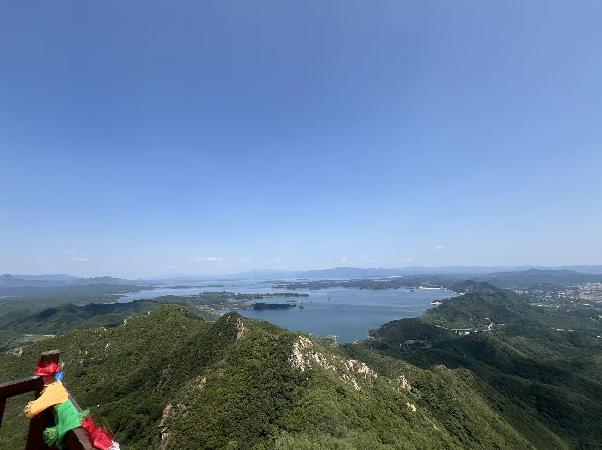

Ethan Xin Hu(胡昕)
Email: ethan.xin.hu@mail.com | Homepage:www.ethanxinhu.com
___________________________________________________________________________________
2022-2026 Ph. D. Materials Engineering Beijing Institute of Technology
2019-2022 M. S. Materials Engineering Beijing Institute of Technology
2015-2019 B. S. Chemistry Northeast Forestry University
___________________________________________________________________________________
I’m currently a Ph.D. candidate in Materials Engineering at Beijing Institute of Technology (BIT) where I am a member of ADVANCED ENERGY MATERIALS AND INTELLIGENT BATTERIES INNOVATION TEAM. I have previously completed my Master degree at this lab. My researches focusing on anion chemistry in electrolyte of electrochemical energy storage devices, and materials used in electrodes in batteries. In additon, my research was focused on porous carbon materals for supercapacitor in my undergraduate period. More broadly, my learning interests beyond the energy storage devices and encompass cross-link technologies as tools for battteirs (AI, advanced physical charactrization techniques). Hope I can get more chances to learn more knowledge to help the energy balance between nature and humen activeties in the future.


 
